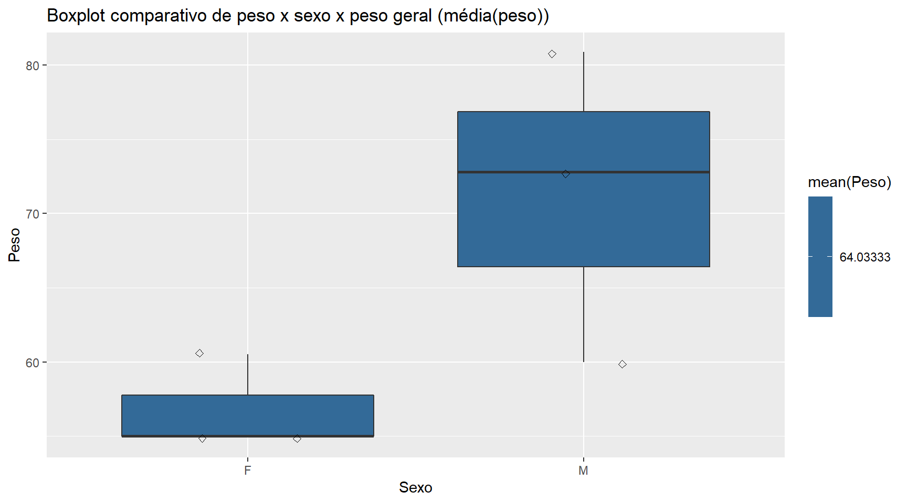

Projeto Integrador de Ciência de Dados
Rodrigo H. Ozon
01/10/2020
Resumo
Este documento apresenta a resolução dos exercícios do curso Tecnológico em Ciência de Dados da Universidade Cruzeiro do Sul virtual para a disciplina de Projeto Integrador de Competência em Ciência de Dados I.
Veja como eu criei um arquivo .pdf utilizando a prática de pesquisa reprodutível no R onde pode ser feito completamente de forma gratuita na plataforma Overleaf.com. Caso você queira ver um tutorial de como começar a integrar a linguagem \(\LaTeX~\) com o R consulte esse artigo que eu postei no meu LinkeDin.
Como exercício criei essa página na web escrita em RMarkdown contendo as interatividades gráficas para os exercícios aqui propostos. Caso tenha interesse, baixe esse documento no formato .pdf editado com a integração \(\LaTeX~\)+R aqui.
Se quiser, visite meu repositório onde subi os scripts:
Introdução
A disciplina de projeto integrador de competências visa, além de sistematizar os conhecimentos adquiridos, também desenvolver atitudes e estratégias de pensamento focadas na resolução de problemas práticos das áreas de futura atuação dos alunos, bem como proporcionar a transversalidade disciplinar utilizada na prática profissional no dia a dia.
Não obstante, é uma valiosa prática andragógica que oferece a necessária vivência do ambiente de trabalho, fundamental para o amadurecimento e mediante aplicação dos conhecimentos em situações reais, abordando sempre problemas de cunho rigorosamente prático.
Além disso, é de fundamental importância a integração entre as disciplinas, pois, no exercício da profissão, o discente estará exposto a desafios que projetam-se transversalmente às disciplinas e é importante saber a qual domínio pertence a solução e em quantas etapas esses desafios se dividem até que se encontre a resposta e a execução em fases mais simples e de seu domínio.
O objetivo é utilizar e evoluir em relação às novas competências recém adquiridas visando sua fixação e otimização no que tangem as seguintes disciplinas: Modelagem de Dados, Análise de Dados Exploratória e Linguagem de Banco de Dados.
Em conformidade ao descrito, logo a seguir serão passadas uma série de leituras de reforço que necessitarão de sua atenção e esforço para recordar e se preparar para os desafios dispostos em nossa trilha de aprendizagem.
Também é bom lembrar que a língua mundialmente falada em tecnologia da informação é Inglês, portanto, é importante você estar estudando esse idioma para evoluir profissionalmente nesse mercado. Claro, você pode utilizar o tradutor da Google, mas é importante praticar e dominar o idioma.
Colocamos links com ferramentas e leituras, cujas indicações são:
Para tanto utilizaremos a linguagem R mundialmente usada para manipulação estatística de dados. Isso com certeza ajudará a dar maior confiança em sua jornada.
Caso você ainda não tenha instalado, vamos fazer isso, porque você vai utilizar para realizar os exercícios. Vamos lá então:
Disponível em: https://www.r-project.org/ aqui você encontra tudo sobre a linguagem e se quiser o direcionamento para baixar o instalador.
Link para baixar o instalador direto: Disponível em: https://cran-r.c3sl.ufpr.br/.
Levamos em conta que talvez você ainda não esteja familiarizado com a linguagem, então resolvemos lhe dar um reforço: Aqui você encontra muita documentação oficial para te ajudar: disponível em: https://cran.r-project.org/manuals.html
Lembrando que apesar da linguagem de manipulação de dados R, temos que saber das fontes e de como as modelamos. Nesse tocante, a modelagem de dados é uma habilidade crucial para todo cientista de dados, esteja você fazendo projetos de pesquisa ou arquitetando um novo repositório para o armazenamento de dados em uma empresa. E, para isso, devemos lembrar que a modelagem de dados trata do processo de produzir um diagrama descritivo de relações entre vários tipos de informações que devem ser armazenadas em um banco de dados e cujo objetivo é criar o método mais eficiente de armazenar informações num banco de dados. Focaremos aqui no diagrama E-R (entidade/relacionamento), assim como a linguagem para manipulação de dados no banco de dados SQL, assim você poderá extrair e realizar junções de dados alvos para extração e submissão à linguagem R. Veja a leitura abaixo indicada na biblioteca virtual:
Para modelagem de dados E-R e linguagem SQL, recomendo a leitura de: MEDEIROS, L.F. Banco de Dados: Princípios e Prática. Curitiba: Ed. Intersaberes. 2013. Disponível na biblioteca virtual da Pearsons em: (coloquei um link pra download direto, que funciona)
https://github.com/rhozon/SQL/raw/master/banco-de-dados-principios-e-pratica.pdf
Há uma série de ferramentas úteis em seu dia a dia para modelar dados de forma conceitual, uma das mais utilizadas é o Modelo BR, que você encontrará no seguinte link:
disponível em https://sourceforge.net/projects/brmodelo30/
Você pode preferir baixar o Workbench do MySQL se tiver mais familiarizado, para tanto é só você seguir as instruções da página de download. Workbench oferece:
- Design e modelagem de banco de dados
- Desenvolvimento SQL
- Administração de banco de dados
- Migração de Banco de Dados: Disponível em: https://dev.mysql.com/downloads/workbench/
Atividade I
Você foi contratado pela empresa XPTO para a função de analista de dados. Como parte de seu trabalho, foi lhe confiada uma extração de dados contendo os seguintes valores: (25, 45, 28, 79, 74, 61, 12, 68, 93, 39, 100), sendo que cada valor na sua atual sequência atende pelos títulos: (alface, cenoura, pepino, chuchu, pimenta, couve, rúcula, cebola, alho, pimentão, alcachofra). Pediram para que você realize o seguinte, utilizando a linguagem R, e apresentar os resultados.
- Crie um gráfico de barras apresentando o resultado de cada item.
- Liste os componentes da matriz dos dados.
- Liste o resultado da soma dessa matriz.
- Liste a média aritmética dessa matriz.
- Liste o produto dos elementos dessa matriz.
Instruções de envio
Não envie arquivo .zip
1 arquivo em PDF exibindo seu código;
1 arquivo com o com o código em R;
Resolução
Carrego os vetores de dados numéricos e qualitativos (nomes das verduras)
valores<-c(25, 45, 28, 79, 74, 61, 12, 68, 93, 39, 100)
titulos<-c("alface","cenoura","pepino","chuchu","pimenta","couve","rúcula","cebola",
"alho","pimentão","alcachofra")
dados<-data.frame(titulos,valores) # Crio o conjunto de dados combinando titulos e valores
dados # Mostra o dataframe titulos valores
1 alface 25
2 cenoura 45
3 pepino 28
4 chuchu 79
5 pimenta 74
6 couve 61
7 rúcula 12
8 cebola 68
9 alho 93
10 pimentão 39
11 alcachofra 100str(dados) # Mostra a estrutura e o tipo de variaveis no dataset'data.frame': 11 obs. of 2 variables:
$ titulos: chr "alface" "cenoura" "pepino" "chuchu" ...
$ valores: num 25 45 28 79 74 61 12 68 93 39 ...A variável titulos é lida como chr, ou seja, como caractere e os valores como numérica.
Crie um gráfico de barras apresentando o resultado de cada item.
Após informarmos ao R as variáveis, podemos criar um gráfico de barras:
library(ggplot2) # Pacote do R para graficos estaticos de qualidade
ggplot(data=dados,aes(x=titulos,y=valores))+
geom_bar(position = "dodge", stat="identity")+
geom_text(aes(label=valores), position=position_dodge(width=0.9), vjust=-0.25, size=2.5)+ # Insere os rotulos acima das barras de tamanho 2.5
ggtitle("Gráfico de barras para valores e títulos")+
theme(plot.title = element_text(hjust = 0.5)) # Ajusta o titulo do grafico em cima no meioVamos gerar o mesmo gráfico utilizando interatividade aqui no HTML:
library(plotly) # Pacote para o Rmarkdown para graficos interativos
graf.interativo<-ggplot(data=dados,aes(x=titulos,y=valores))+
geom_bar(stat="identity")+
ggtitle("Gráfico de barras para valores e títulos")+
theme(plot.title = element_text(hjust = 0.5)) # Ajusta o titulo do grafico em cima no meio
ggplotly(graf.interativo)Repare que retirei os valores dos rótulos acima das barras.
Liste os componentes da matriz dos dados.
Para listarmos os componentes da matriz de dados, podemos simplesmente ordenar do maior para o menor:
library(dplyr) # Pacote para rodar as formulas com o operador pipe
dados%>%
group_by(titulos)%>%
arrange(desc(valores))# A tibble: 11 x 2
# Groups: titulos [11]
titulos valores
<chr> <dbl>
1 alcachofra 100
2 alho 93
3 chuchu 79
4 pimenta 74
5 cebola 68
6 couve 61
7 cenoura 45
8 pimentão 39
9 pepino 28
10 alface 25
11 rúcula 12Poderíamos refazer o gráfico de barras ordenado:
ggplot(dados,aes(x= reorder(titulos,-valores),valores))+
geom_bar(position="dodge",stat ="identity")+
geom_text(aes(label=valores), position=position_dodge(width=0.9), vjust=-0.25, size=2.5)+ # Insere os rotulos acima das barras de tamanho 2.5
ggtitle("Gráfico de barras ordenado para valores e títulos")+
theme(plot.title = element_text(hjust = 0.5))+# Centraliza o titulo do grafico acima
theme(axis.title.x=element_blank())# Nao mostre reorder(-valores) como label no eixo xAqui no RMarkdown, faço o mesmo gráfico para interaividade no HTML:
graf.interativo2<-ggplot(dados,aes(x= reorder(titulos,-valores),valores))+
geom_bar(stat ="identity")+
ggtitle("Gráfico de barras ordenado para valores e títulos")+
theme(plot.title = element_text(hjust = 0.5))+# Centraliza o titulo do grafico acima
theme(axis.title.x=element_blank())# Nao mostre reorder(-valores) como label no eixo x
ggplotly(graf.interativo2)
Liste a soma e a média aritmética dessa matriz
Para somarmos e também para obtermos a média aritmética do vetor de valores simplesmente fazemos
sum(dados$valores) # Soma 624mean(dados$valores) # Media aritmetica 56.72727round(mean(dados$valores),0) # Valores arredondados pois os valores sao discretos (inteiros) 57Ou então aqui pelo Rmarkdown diretamente no corpo do texto, soma = 624 e a média = 57.
Para inserir o valor da soma no texto utilize o comando:
# o valor da soma eh `r sum(dados$valores)` ...
# a média é de `r round(mean(dados$valores),0)` ...Liste o produto dos elementos da matriz
Vamos obter o multiplicatório do vetor de valores, que é o mesmo que:
\[ \displaystyle\prod_{i=1}^{11}\mbox{valores}_{i}= \mbox{valor}_{1}\times\mbox{valor}_{2}\times\ldots\times\mbox{valor}_{11} \]
ou seja, a notação \(\displaystyle\prod_{i=1}^{11}\) lê-se que do primeiro \(i=1\), índice de contagem da multiplicação até o \(11^o\) multiplique a variável valores.
print(prod(dados$valores), digits = 20) # Especifico o numero de digitos para numeros grandes 3324580966324800000Ou então podemos multiplicar o valor do alface com o da cenoura fazendo:
alfacexcenoura<-dados[1,2]*dados[2,2]
alfacexcenoura 1125Sendo que a instrução [1,2] significa primeira linha, da segunda coluna.
Se quiséssemos fazer o produto de todos os elementos do dataset, faríamos:
alface \(\times 25\), cenoura \(\times 45\), pepino \(\times 28\), chuchu \(\times 79\) …
Ou seja, o vetor de nomes (títulos) multiplicado pelo vetor numérico de valores.
library(tidyr)
library(tidyverse)
multiplica.elementos<-paste(dados$titulos,"*",dados$valores)
multiplica.elementos # Mostra o resultado "alface * 25" "cenoura * 45" "pepino * 28" "chuchu * 79"
"pimenta * 74" "couve * 61" "rúcula * 12" "cebola * 68"
"alho * 93" "pimentão * 39" "alcachofra * 100"as.tibble(multiplica.elementos) # Mostra o resultado como um vetorWarning: `as.tibble()` is deprecated as of tibble 2.0.0.
Please use `as_tibble()` instead.
The signature and semantics have changed, see `?as_tibble`.
This warning is displayed once every 8 hours.
Call `lifecycle::last_warnings()` to see where this warning was generated.# A tibble: 11 x 1
value
<chr>
1 alface * 25
2 cenoura * 45
3 pepino * 28
4 chuchu * 79
5 pimenta * 74
6 couve * 61
7 rúcula * 12
8 cebola * 68
9 alho * 93
10 pimentão * 39
11 alcachofra * 100Atividade II
Você trabalha há algum tempo como analista de dados numa empresa contratada pela Formula-1. O cientista de dados chefe pediu para que você, baseando-se no diagrama E-R abaixo, elabore os seguintes comandos SQL para satisfazer seus pedidos:

\(\color{red}{\text{Obs.: (a dica aqui é que, para elaborar os comandos SQL, você não precisa acessar a base de dados, já que possui}}\)
\(\color{red}{\text{a modelagem (diagrama) que indica as chaves PK e FK, bem como os atributos de cada tabela}}\)
\(\color{red}{\text{e seus relacionamentos.)}}\)
Exibir as equipes que são do país “Alemanha”.
Exibir quais os pilotos que são do mesmo país do piloto “Max Chilton”.
Selecionar os pilotos que são da equipe “McLaren-Mercedes”.
Resolução
Poderíamos dar as instruções diretamente do R usando o SQLite, carregando primeiro os pacotes:
library(RSQLite)
library(DBI)Como aqui não há necessidade de usarmos os comandos para conectarmos ao banco de dados estruturado, (deixo o chunk somente com os comentários de comandos)
#conn <- dbConnect(SQLite(), "test .db")
#dbListTables(conn) # Mostra todas as bases de dados disponiveis
#connExibir as equipes que são do país “Alemanha”.
Vamos exibir com comandos do SQLite quais as equipes são da Alemanha:
#query <- "SELECT NM_EQUIPE, ID_PAIS,
# FROM TB_EQUIPE
# WHERE ID_PAIS='Alemanha'"
#result <- dbGetQuery(conn, query)
#str(result)Exibir quais os pilotos que são do mesmo país do piloto “Max Chilton”
#query<-"SELECT ID_PAIS, NM_PILOTO
# FROM TB_PILOTO
# WHERE ID_PAIS == NM_PILOTO='Max Chilton'"
#result <- dbGetQuery(conn, query)
#resultSelecionar os pilotos que são da equipe “McLaren-Mercedes”
#query<-"SELECT NM_PILOTO FROM TB_PILOTO
# INNER JOIN TB_EQUIPE ON NM_EQUIPE_id='McLaren-Mercedes'"
#result <- dbGetQuery(conn, query)
#resultAtividade III
Você trabalha numa empresa de manipulação de dados e como analista de dados está acostumado a receber os mais diversos tipos de pedidos, desde procedures em SQL, rotinas de ETL e, também, como nesse caso, conjuntos de dados para gerar gráficos e entregar à área de marketing que está desenvolvendo um importante projeto, comparando faixas de markup entre produtos de concorrentes. Então, eles lhe passaram dois conjuntos de dados a saber:
x = (5,5,5,13,7,11,11,9,8,9)
y = (11,8,4,5,9,5,10,5,4,10)
Ambos possuem 10 elementos cada, representados por 2 vetores.
Pede-se que você prepare e apresente a visualização:
Utilize a linguagem R para plotar X e Y em gráficos diferentes utilizando BOXPLOT.
Usando R, plote a comparação de X e Y no mesmo gráfico utilizando BOXPLOT.
Obs.: como dica importante, aqui está o entendimento desse importante tipo de gráfico BOXPLOT que serve para a exibição de distribuição, recorde aqui a definição:

Resolução
Começo declarando os conjuntos de dados
x <- c(5,5,5,13,7,11,11,9,8,9)
y <- c(11,8,4,5,9,5,10,5,4,10)
xy<-data.frame(x,y)
xy x y
1 5 11
2 5 8
3 5 4
4 13 5
5 7 9
6 11 5
7 11 10
8 9 5
9 8 4
10 9 10Utilize a linguagem R para plotar X e Y em gráficos diferentes utilizando BOXPLOT.
require(gridExtra)
x<-ggplot(data=xy,aes(x="",y=x))+
geom_boxplot()+
ggtitle("Boxplot de x")+
theme(axis.title.x=element_blank())
y<-ggplot(data=xy,aes(x="",y=y))+
geom_boxplot()+
ggtitle("Boxplot de y")+
theme(axis.title.x=element_blank())
grid.arrange(x, y, ncol=2)O mesmo gráfico com interatividade
par(mfrow=c(1,2))
x<-ggplot(data=xy,aes(x="",y=x))+
geom_boxplot()+
theme(axis.title.x=element_blank())
y<-ggplot(data=xy,aes(x="",y=y))+
geom_boxplot()+
theme(axis.title.x=element_blank())
subplot(ggplotly(x), ggplotly(y))Gráfico: Boxplots de x e de y
O que também pode ser feito sem o pacote ggplot2:
par(mfrow=c(1,2))
boxplot.x<-boxplot(xy$x, main="Boxplot de X")
boxplot.y<-boxplot(xy$y, main="Boxplot de Y")A leitura dos boxplots pode ser resumida com o sumário estatístico para a mediana, máximo, mínimo, primeiro e terceito quartil:
summary(xy) x y
Min. : 5.0 Min. : 4.00
1st Qu.: 5.5 1st Qu.: 5.00
Median : 8.5 Median : 6.50
Mean : 8.3 Mean : 7.10
3rd Qu.:10.5 3rd Qu.: 9.75
Max. :13.0 Max. :11.00 A amplitude interquartil, pode ser facilmente obtida:
IQR.x<-quantile(xy$x,probs=0.75)-quantile(xy$x,probs=0.25)
IQR.y<-quantile(xy$y,probs=0.75)-quantile(xy$y,probs=0.25)
tibble(IQR.x,IQR.y)# A tibble: 1 x 2
IQR.x IQR.y
<dbl> <dbl>
1 5 4.75# Aqui no RMarkdown, uso:
library(knitr)
library(kableExtra)
kbl(cbind(IQR.x,IQR.y)) %>%
kable_paper() %>%
scroll_box(width = "200px", height = "100px")%>%
kable_styling(bootstrap_options = c("striped", "hover", "condensed"))| IQR.x | IQR.y | |
|---|---|---|
| 75% | 5 | 4.75 |
Usando R, plote a comparação de X e Y no mesmo gráfico utilizando BOXPLOT.
ggplot(xy,aes(x=x,y=y))+
geom_boxplot()+
ggtitle("Boxplot x e y")Para facilitar a visualização das distribuições plotamos as densidades kernel, que é uma forma não paramétrica de estimar a função de densidade de probabilidade de uma variável aleatória:
par(mfrow=c(1,2))
densx <- density(xy$x,kernel="epanechnikov")
densy<- density(xy$y,kernel="epanechnikov")
densidades<-c(densx,densy)
plot(densx)
plot(densy)Atividade IV
Como cientista de dados jr, trabalhando no IBGE, foi lhe passada uma amostra de dados retirada de um SGBD do CENSO, na forma de uma matriz, onde a primeira linha contém o nome dos atributos para facilitar sua identificação e, após isso, 6 linhas contendo alguns dados amostrais de uma população qualquer.
Segue a tabela:
| Id | Turma | Sexo | Idade | Altura | Peso | Filhos | Fuma | Toler | Exerc | Cine | OpCine | TV | OpTV |
|---|---|---|---|---|---|---|---|---|---|---|---|---|---|
| 1 | A | F | 17 | 1.60 | 60.5 | 2 | NAO | P | 0 | 1 | B | 16 | R |
| 2 | A | F | 18 | 1.69 | 55.0 | 1 | NAO | M | 0 | 1 | B | 7 | R |
| 3 | A | M | 18 | 1.85 | 72.8 | 2 | NAO | P | 5 | 2 | M | 15 | R |
| 4 | A | M | 25 | 1.85 | 80.9 | 2 | NAO | P | 5 | 2 | B | 20 | R |
| 5 | A | F | 19 | 1.58 | 55.0 | 1 | NAO | M | 2 | 2 | B | 5 | R |
| 6 | A | M | 19 | 1.76 | 60.0 | 3 | NAO | M | 2 | 1 | B | 2 | R |
Seu gerente pediu para que você, a partir desses dados, lhe passe, utilizando a linguagem R, as seguintes respostas:
Qual a média IMC dessa pequena amostra?
Boxplot comparando a peso M, peso Fe peso geral no mesmo gráfico.
Boxplot da altura geral.
\(\color{red}{\text{Obs.: dica, a formula do IMC é a sigla para Índice de Massa Corporal, utilizada para classificar o peso}}\)
\(\color{red}{\text{do indivíduo em relação à sua altura e assim indicar se está dentro do peso ideal, acima ou abaixo do peso normal.}}\)
\(\color{red}{IMC = peso ÷ (Altura x Altura)}\)
\(\color{red}{\text{Há uma tabela para sabermos se o indivíduo está dentro ou fora dos padrões, mas isso não é importante nesse momento.}}\)
\(\color{red}{\text{Obter a medida sim!}}\)
Resolução
Primeiramente carrego a tabela para dentro do R:
tabela<-read.csv(file="https://raw.githubusercontent.com/rhozon/datasets/master/AtividadeIV.csv",head=TRUE,sep=";")
str(tabela) # Checo se ele leu corretamente o dataset'data.frame': 6 obs. of 14 variables:
$ Id : int 1 2 3 4 5 6
$ Turma : chr "A" "A" "A" "A" ...
$ Sexo : chr "F" "F" "M" "M" ...
$ Idade : int 17 18 18 25 19 19
$ Altura: num 1.6 1.69 1.85 1.85 1.58 1.76
$ Peso : num 60.5 55 72.8 80.9 55 60
$ Filhos: int 2 1 2 2 1 3
$ Fuma : chr "NAO" "NAO" "NAO" "NAO" ...
$ Toler : chr "P" "M" "P" "P" ...
$ Exerc : int 0 0 5 5 2 2
$ Cine : int 1 1 2 2 2 1
$ OpCine: chr "B" "B" "M" "B" ...
$ TV : int 16 7 15 20 5 2
$ OpTV : chr "R" "R" "R" "R" ...Qual a média IMC dessa pequena amostra?
Primeiramente, precisamos criar a variável IMC:
tabela<-tabela%>%
mutate(IMC=Peso/Altura^2)
str(tabela)'data.frame': 6 obs. of 15 variables:
$ Id : int 1 2 3 4 5 6
$ Turma : chr "A" "A" "A" "A" ...
$ Sexo : chr "F" "F" "M" "M" ...
$ Idade : int 17 18 18 25 19 19
$ Altura: num 1.6 1.69 1.85 1.85 1.58 1.76
$ Peso : num 60.5 55 72.8 80.9 55 60
$ Filhos: int 2 1 2 2 1 3
$ Fuma : chr "NAO" "NAO" "NAO" "NAO" ...
$ Toler : chr "P" "M" "P" "P" ...
$ Exerc : int 0 0 5 5 2 2
$ Cine : int 1 1 2 2 2 1
$ OpCine: chr "B" "B" "M" "B" ...
$ TV : int 16 7 15 20 5 2
$ OpTV : chr "R" "R" "R" "R" ...
$ IMC : num 23.6 19.3 21.3 23.6 22 ...Calculamos a média:
mean(tabela$IMC) 21.53335Boxplot comparando a peso M, peso Fe peso geral no mesmo gráfico.
ggplot(data=tabela,aes(x=Sexo,y=Peso, fill=mean(Peso)))+
geom_boxplot()+
ggtitle("Boxplot comparativo de peso x sexo x peso geral (média(peso))")+
geom_jitter(shape=5, position=position_jitter(0.2))Ao observarmos as bolinhas geradas pela instrução jitter temos uma boa noção da dispersão dos pesos de uma maneira mais geral.
ggplotly(ggplot(data=tabela,aes(x=Sexo,y=Peso, fill=mean(Peso)))+
geom_boxplot()+
ggtitle("Boxplot comparativo de peso x sexo x peso geral (média(peso))")+
geom_jitter(shape=5, position=position_jitter(0.2)))Boxplot da altura geral
ggplot(tabela,aes(x="",y=Altura))+
geom_boxplot()+
geom_jitter(shape=5, position=position_jitter(0.2))+
ggtitle("Boxplot das Alturas")
Ao passar o mouse em cima das bolinhas é possível ter uma noção melhor do peso geral
ggplotly(ggplot(tabela,aes(x="",y=Altura))+
geom_boxplot()+
geom_jitter(shape=5, position=position_jitter(0.2))+
ggtitle("Boxplot das Alturas"))Referências
Gujarati, D.,N. Basic Econometrics, fourth edition, McGraw-HiII/lrwin, 2003.
Overleaf: Online Editor. Disponível em Overleaf.com
Ozon, R.H. Análise econométrica em tempo real: Modelos família ARCH para dados financeiros in rhozon.github.io .
Xie, Y. Dynamic Documents with R and knitr 2nd edition, 2015.